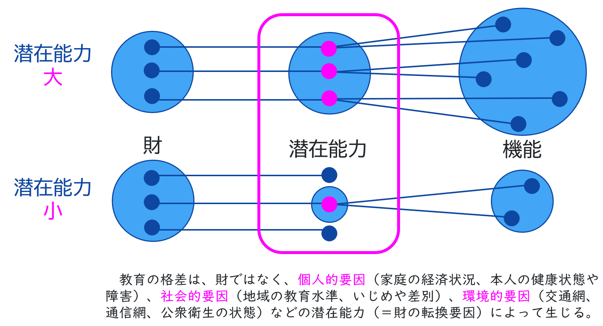

公共「AI時代のウェルビーイング」
～ケイパビリティ・アプローチで考える「より良い社会」～
～ケイパビリティ・アプローチで考える「より良い社会」～
AIとの対話やグループ学習を通して、みなさんの「幸せ」について考えていきましょう！
「幸せ」って、どういう状態だと思う？
テストで良い点を取ること？ 志望校に合格すること？ もっと他の何か？
経済学者のアマルティア・センは、「人が実際に何ができていて（＝機能）、どんな選択肢の中から自由に選べるか（＝潜在能力）が、本当の豊かさを考える上で大事だ！」と考えました。これが「ケイパビリティ・アプローチ」の基本的な考え方です。
財（モノやお金）があっても、それを使える環境や能力（潜在能力）がなければ、実際に豊かな活動（機能）にはつながらない。
「ケイパビリティ・アプローチ確認テスト」を開き、AIからの出題に解答してください。
【重要】AIと上手に付き合うために
AIはたくさんのことを知っていますが、いつも100%正しい情報を教えてくれるとは限りません。 「他の考え方はないかな？」と、一度立ち止まって自分の頭で考えることを大切にしてください。
ここからは各グループで話し合います。
「AI対話用プロンプト (グループ用) 」を開き、ChatGPTやGemini等にプロンプトをコピペして対話を開始してください。AIとの対話で各自が考えたことを「共有ボード」に入力し、グループで考察を深めていきましょう。
今日は、「ケイパビリティ・アプローチ」という考え方を通して、人の幸せや社会のあり方について考えました。
今日の学びを自分自身で評価し、授業を振り返ってください。次回の授業では、より多くの人々の潜在能力を拡大するためにはどのような社会の仕組みやルールが必要なのか「社会のあり方」そのものを構想していきます。
ご協力ありがとうございました。今日の学びが、皆さんのこれからの「公共」の学習や、社会を見る目に少しでも役立つことを願っています。